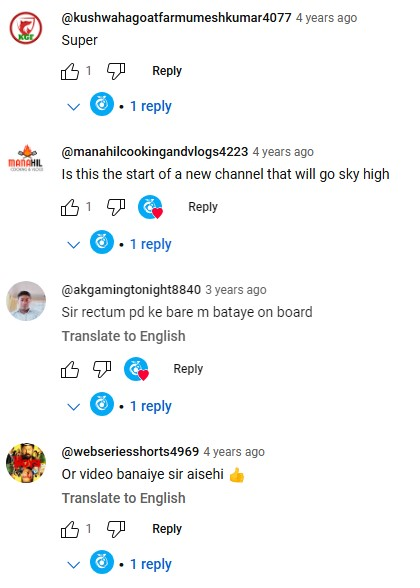
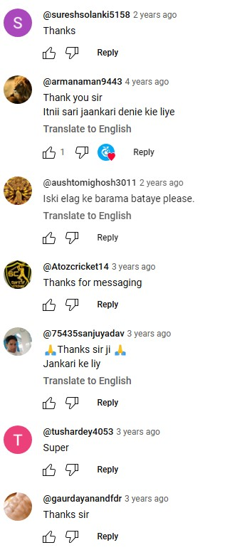

Courses
Reviews
 
Dr. Kislay Kumar
Our Founder
Dr. Kislay Kumar, the visionary founder of Gyan Net, is a distinguished veterinary doctor who has successfully combined his academic expertise with a passion for education and communication. After completing his postgraduate studies in veterinary science, he embarked on a journey to share knowledge and inspire learning. In 2019, he launched his YouTube channel, **Gyan TV**, as a platform to make quality educational content accessible to a broader audience. Through Gyan TV, Dr. Kumar has been empowering viewers with insights into diverse topics, reflecting his commitment to fostering a well-informed society. His dedication to education and innovation continues to inspire many.